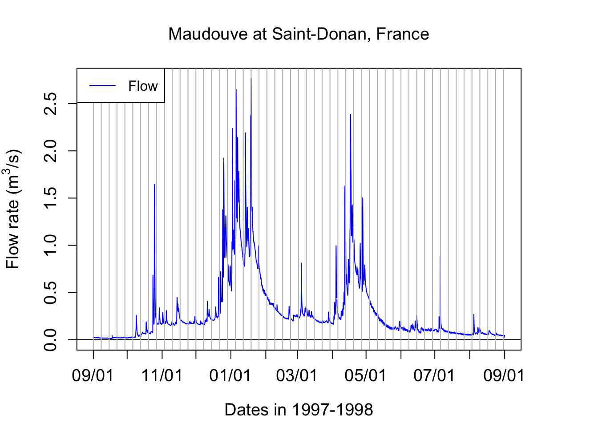
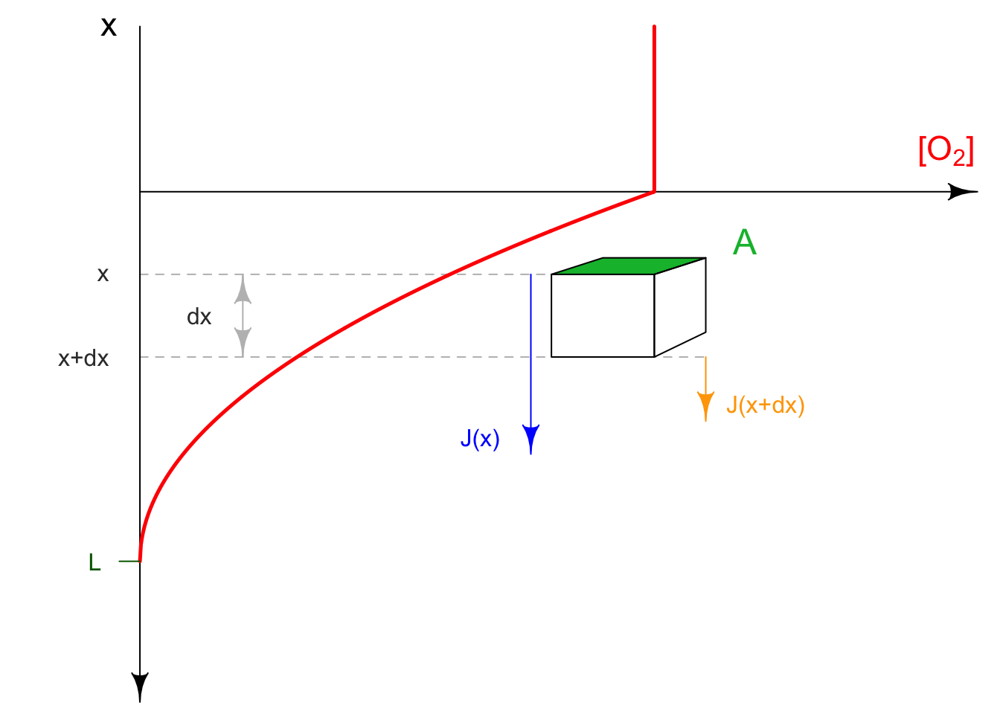
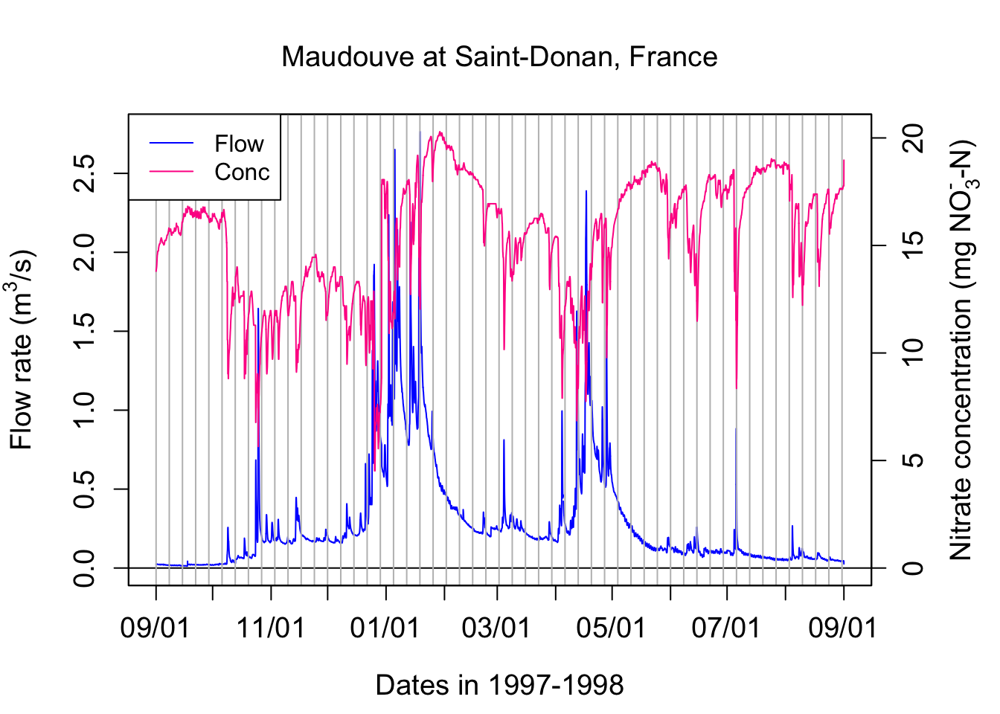

Chapter 13 Introduction to hydrographs, chemographs, concentrations, and loads
At the end of this chapter, you should be able to:
- Recognize a hydrograph and name its descriptors
- Know how to calculate cumulative flow volumes
- Know how to construct flow duration curves and compare them between small and large watersheds
- Recognize a chemograph and define its descriptors
- Summarize what the arithmetic average and median concentrations are for common pollutants in mostly agricultural watersheds
- Know how to calculate cumulative loads at the event and yearly scale
- Distinguish between arithmetic and flow weighted concentrations for a variety of common pollutants in mostly agricultural watersheds
- Recognize the importance of high flows to the export of pollutants in watersheds
13.1 Hydrographs as the basic hydrologist tool
In hydrology, we work with time series of flow rates and concentrations, and many of the conclusions we make are based on the calculations of water and nutrient fluxes. The beginning of this paragraph mentions time series. Indeed, in hydrology we no longer measure flow on a continuous basis, but rather at a given frequency.
From the late 1880s to the early 1980s though, hydrographs were, always at the beginning and, in many cases later on, automatically drawn on paper by a scribing pen on a roll of paper. These would move relative to the other as a function of the variable stage of the nearby stream or river, thereby creating a true continuous record of stage variations or a continuous hydrograph. Nowadays, however, the vast majority not to say all of the hydrological data are collected by electronic equipment at a given time interval and logged on memory chips at a given logging interval.
Thanks to hydrological instruments, we have been able to make measurements of river stages continuously or at a near continuous pace, i.e., at a high frequency (hourly or smaller), for nearly 150 years. From this high frequency data, it has been possible to calculate flow rates and obtain a visual representation of typical variations of flow following a rainfall event.
The first example below is an example of what we refer to as a simple hydrograph, which follows a rainfall event, with an initial baseflow, a rapidly rising limb, a flow peak, and a more slowly falling limb.
hydgph<-read.csv(file = "hydgph.csv", header = TRUE)
names(hydgph)=c("date","Q","NO3")
date=as.POSIXct(hydgph$date, format = "%Y-%m-%d %H:%M:%S") # transforms the first column of the file, which are characters into dates that R understands
Q=hydgph$Q*1000 # Puts in the variable Q the flow rates, which are orginally in m³/s to L/s for better visualization
par(mar=c(4.5,4.5,0.5,0.5))
xlimHG=as.POSIXct(c("1999-01-03 00:00:00","1999-01-08 00:00:00"));ylimHG=c(50,350) # this defines the plotting ranges for the x and y axes
plot(date,Q,xlab = "date",ylab = "Flow rate (L/s)",type = "p",col="blue",xlim=xlimHG,ylim=ylimHG) # this plots the hydrographAlthough the points are disjointed, it is very tempting to add a line between them, as our observations and intuitions tell us that there is a pattern of flow up or down, and in this example, the time interval between consecutive values is 600 seconds or 10 min. And indeed, this is exactly what hydrologists do, we add lines between points as an approximation of what flow must have looked like during the measurement intervals. The same data plotted without the measurement points looks like the figure below, appears continuous, although it is not!
## Warning: package 'shape' was built under R version 3.6.2
13.1.1 Characteristics of a hydrograph
A hydrograph is characterized by a fast rising limb, and a slower falling limb. This is the typical response of flow following a rainfall event. The time it takes to go from the beginning of what we refer to as an event to the peak is called time of rise. The maximum of the flow rate is referred to as peakflow.
13.1.2 Actual hydrograph over an entire year
The goal of the first part above was to realize that there is no such thing as continuous data, but that really all data around the world is an assemblage of discontinuous data points. In the case of hydrological data, all points are auto-correlated, and provided that flow be measured frequently enough, then a linear interpolation between consecutive points is just fine.
Now, let us explore what a typical yearly hydrograph of a watershed in a temperate climate where snow does not play a significant role. The conventional acronym for flow rates is the letter Q.
data<-read.csv(file="sample_1hr_QC_data.csv",header = TRUE) #Reads file into table format
WSarea<-24.2 #Area of watershed in km2
WS<-"Maudouve at Saint-Donan, France"
names(data)=c("datetime","Q","C") # renames the columns in simpler names
data<-as.data.frame(data)
data$datetime<-as.POSIXct(strptime(data$datetime, "%Y-%m-%d %H:%M:%S")) # transforms characters into date values understood by R
D<-data$datetime
Q<-data$Q #Defines Q as the flow value (m3/s)
N=nrow(data) #Sets N to the value equal to the number of total rows in the table
# definition of the x and y axes limits
startdate<-D[1]
enddate<-D[N]
xlim = as.POSIXct(c(startdate,enddate)) # this renders the first and last date understandable for plotting purposes
ylimQ = c(0,max(Q)) # ylim for flow
ScaleF = 1.2 # scaling factor for size of fonts and other things
y1lab<-expression("Flow rate (" * m^3 * "/s)") # defines the label for flow
par(mar=c(4.5,4.5,4,4.5)) # defines the sizes, in number of lines, for the margins (bottom, left, top, right)
ltyp=c(1,2)
plot(D,Q,col="blue",type="l",cex=0.1,yaxt="n",
lty=ltyp[1],xaxt="n",xlab="",ylab="",xlim=xlim,ylim=ylimQ)
# we are taking all the default addition of axis tick marks and numbers out by using xaxt and yaxt = "n"
# and setting the axis labels at nothing using xlab = "" and ylab = ""
abline(h=0)
abline(v=seq(startdate, enddate, by="week"),col=("grey"))
axis.POSIXct(1, at=seq(startdate, enddate, by="month"), format="%m/%d",cex.axis=ScaleF)
# this tells R that we want the X axis ticks and values to be displayed as dates, be added on a monthly basis,
# using the month/day format
axis(2,cex.axis=ScaleF)
# this tells R that the first Y axis ticks can be displayed (that function was repressed earlier by 'yaxt="n" ')
par(new=TRUE)
# this tells R that a new plot has already been opened, in other words you are telling R to keep adding things
# on the existing plot
mtext("Dates in 1997-1998",side=1,line=3,cex=ScaleF) # add in the margin the defined labels and title
mtext(y1lab,side=2,line=3,cex=ScaleF)
mtext(WS,side=3,line=1.5,cex=ScaleF)
legend("topleft",c("Flow"),lty = c(1), col = c("blue"))
Notice that one can see individual hydrographs characterized for the rapid rise of flow rates, followed by a rapid fall. But they seem to occur on top of a transient minimum flow rate. The latter is called baseflow. It corresponds to the stream water exclusively fed by groundwater. You can see in this example that there is very low baseflow from September 1st to the 3rd week of October. A large event around that time raises the baseflow to about 250 L/s and this stays almost stable until the end of the third week of December. This is the time when most of the rainfall starts in this part of the world and heavy rainfall last until the middle of January. The baseflow during these 1.5 months rose above 600 L/s. It took about an entire month with nearly no rainfall from the last week of January to the last week of Febraury for baseflow to go down to the pre-December values. Baseflow stays at that general level between the last week of February to the first week of April. Then a series of large rainfall events raise the baseflow back to high levels throughout the month of April. Again, it takes again about one month for baseflow to decrease and then stay stable throughout the month of June. In July and August, even a relative large event at the end of the first week of July does not raise the baseflow level, which steadily disminishes until the beginning of September.
13.1.3 Calculating water fluxes or cumulative flow volumes
Flow peaks matter very much for flooding issues and an entire domain of hydrology and statistical hydrology is devoted to calculating and predicting flow peaks generating floods. For water quality purposes, flow volumes matter just as much as flow peaks do. Indeed, the amount or load of pollutants leaving a field or a watershed, or delivered in a receiving water body, depends on the total volume of water, and, on the concentrations.
Flow volumes or cumulative flows, correspond to the cumulative volume of water that has passed at a particular point over a given period. Mathematically, this means that flow volumes correspond to the integral over time of the instantaneous flow rates. or
\[ CumulQ = \int_{}^{period}{Q(t).dt} \]
In practice, because the instantaneous flow rates are discrete in time,
\[ CumulQ = \sum_{i=1}^{n-1}{\frac{(Q_i + Q_{i+1})}{2}}.time \space interval \]
If we zoom on a hypothetical hydrograph named TS (time series), this corresponds to cumulating the area under each trapeze represented below.
par(mar=c(4.5,4.5,0.5,0.5))
x<-1:10
TS<-25-(x-5)^2+2;xlim=c(0,11);ylim=c(0,30)
plot(x,TS,xlim=xlim,ylim=ylim)
date<-as.character(date) # need to transfer dates back into character to make some operations
polygx<-cbind(head(x,-1),head(x,-1),x[-1],x[-1],head(x,-1)) # x values of the polygons
polygy<-cbind(rep(0,length(TS)-1),head(TS,-1),TS[-1],rep(0,length(TS)-1),rep(0,length(TS)-1)) # y values of the polygons
for (j in 1:(length(TS)-1)){polygon((as.vector(polygx[j,])),as.vector(polygy[j,]),col="lightblue")}
date<-as.POSIXct(date)
par(new=TRUE)
plot(x,TS,xlim=xlim,ylim=ylim) One could calculate the cumulative flow by adding over time the area under each trapeze at in the example below. The result of this mock unitless ‘hydrograph’ are displayed underneath.
cumTS_inst=matrix(0,10,1) # 10 values, the first one being 0 to associate to initial time
for (i in 1:9){QQ=(TS[i]+TS[i+1])/2;cumTS_inst[i+1]=cumTS_inst[i]+QQ}
as.vector(cumTS_inst)## [1] 0.0 14.5 35.0 59.5 86.0 112.5 137.0 157.5 172.0 178.5It turns out that in R, there is a very smart and simple way to calculate cumulative flow, loads, etc. of a time series (TS here) using the code below:
## [1] 0.0 14.5 35.0 59.5 86.0 112.5 137.0 157.5 172.0 178.5The magic comes the function cumsum() which calculates the cumulative sum of a vector and generates a vector of the same length of the original one:
## [1] 1 3 4 6 7 9and the fact that each trapeze is the average of two rectangles represented below:
par(mar=c(4.5,4.5,0.5,0.5))
plot(x,TS,xlim=xlim,ylim=ylim)
suprectxy=cbind(1:9,rep(0,9),2:10,TS[2:10])
infrectxy=cbind(1:9,rep(0,9),2:10,TS[1:9])
for (i in 1:9){rect(infrectxy[i,1],infrectxy[i,2],infrectxy[i,3],infrectxy[i,4],col = transpblue)}
for (i in 1:9){rect(suprectxy[i,1],suprectxy[i,2],suprectxy[i,3],suprectxy[i,4],col = transpred)}Let us apply this method to the Maudouve hydrograph plotted earlier. Calculating the cumulative flow corresponds to integrating under the hydrograph curve, as represented by the grey area on the left panel. The corresponding cumulative flow, expressed in mm is plotted on the right side of the plots.
par(mfrow = c(3,2));par(mar=c(4.5,5,0.5,0.5))
xlim = as.POSIXct(c(startdate,enddate))
n=c(2500,4500,N)
for (i in 1:3){
plot(0,0,col="blue",type="l",cex=0.1,yaxt="n",
lty=ltyp[1],xaxt="n",xlab="",ylab="",xlim=xlim,ylim=ylimQ)
abline(h=0)
axis.POSIXct(1, at=seq(startdate, enddate, by="month"), format="%m/%d",cex.axis=ScaleF)
axis(2,cex.axis=ScaleF)
polygon(c(D[1:n[i]],D[n[i]:1]),c(Q[1:n[i]],rep(0,n[i])),col="grey")
par(new=TRUE)
plot(D,Q,col="blue",type="l",cex=0.1,yaxt="n",
lty=ltyp[1],xaxt="n",xlab="",ylab="",xlim=xlim,ylim=ylimQ)
mtext("Dates in 1997-1998",side=1,line=3,cex=ScaleF) # add in the margin the defined labels and title
mtext(y1lab,side=2,line=3,cex=ScaleF)
cumQ=c(0,(cumsum(Q[-1])+cumsum(head(Q,-1)))/2)*3600/WSarea/1000 # calculates in mm the cumulative flow for each time stamp
plot(D[1:n[i]],cumQ[1:n[i]],col="red",type="l",cex=0.1,yaxt="n",
lty=ltyp[1],xaxt="n",xlab="",ylab="",xlim=xlim,ylim=c(0,cumQ[N]))
abline(h=0)
abline(h=seq(0,1000,by=50),lty=2,col="lightgrey")
axis.POSIXct(1, at=seq(startdate, enddate, by="month"), format="%m/%d",cex.axis=ScaleF)
axis(2,cex.axis=ScaleF)
par(new=TRUE)
mtext("Dates in 1997-1998",side=1,line=3,cex=ScaleF) # add in the margin the defined labels and title
mtext("Cumulative Flow volume (mm)",side=2,line=3,cex=ScaleF)
}
## [1] 378Figure 13.1: Video illustrating the calculation of cumulative volume by integrating under a hydrograph. Notice that the two high flow periods in January and April participate in a large proportion of the total cumulative volume
Notice that most of the increase of the cumulative flow occurs during the January and April periods described above.
13.1.4 Evaluating the importance of rare high flow events: flow duration curves
13.1.4.1 Sorting flow and load values
Flow occurs permanent streams throughout the year, but with bursts following rainfall events, which are, in most places on earth relatively rare. For example, in North Carolina, it rains about 7% of the time. Most of the flow occurs after these rare occurrences. The idea behind the duration curve concept is to characterize the importance of high flow events in the overall volume of water generated.
Flow duration curves represent the percentage of the total flow that occurred in x% of the time corresponding to the highest flows. The same applies for loads. This might sound a bit murky, but hopefully it will not with the further explanations below. To get there, one first needs to order flow and loads in descending order.
One can also calculate the cumulative flow associated with the sorted instantaneous flow rates as follows:
cumQSort<-c(0,(cumsum(QSort[-1])+cumsum(head(QSort,-1)))/2)*3600/WSarea/1000
cumQSortPerc<-cumQSort/tail(cumQSort,1)*100The blue hydrograph from above now becomes:
par(mar=c(4.5,4.5,1,1))
plot(1:length(QSort),QSort,col="blue",type="l",cex=0.1,yaxt="n",
lty=ltyp[1],xaxt="n",xlab="",ylab="",ylim=ylimQ)
abline(h=0)
axis(2,cex.axis=ScaleF)
mtext(y1lab,side=2,line=3,cex=ScaleF)
mtext("Cumulative number of flow values",side=1,line=3,cex=ScaleF)
legend("topright",c("Sorted Flow"),lty = c(1), col = c("blue"))
So now the cumulative flow volume curve corresponding to the highest flow rates as a function, not of time anymore but of the cumulative number of flow values looks like this:
par(mar=c(4.5,5.5,1,1))
plot(cumQSortPerc,col="blue",type="l",cex=0.1,yaxt="n",
lty=ltyp[1],xaxt="n",xlab="",ylab="", ylim=c(0,100))
abline(h=0)
axis(2,cex.axis=ScaleF)
mtext("Cumulative number of flow values",side=1,line=1,cex=ScaleF)
mtext("%age of cumulative flow corresponding to\n the highest sorted flow rates ",side=2,line=3,cex=ScaleF)
This corresponds to the integration under the curve of the sorted hydrograph as in:
par(mfrow = c(3,2));par(mar=c(4.5,5,0.5,0.5))
xlim = as.POSIXct(c(startdate,enddate))
n=c(2500,4500,N)
for (i in 1:3){
plot(0,0,col="blue",type="l",cex=0.1,yaxt="n",
lty=ltyp[1],xaxt="n",xlab="",ylab="",xlim=c(1,length(Q)),ylim=ylimQ)
abline(h=0)
axis(2,cex.axis=ScaleF)
polygon(c(1:n[i],n[i]:1),c(QSort[1:n[i]],rep(0,n[i])),col="grey")
par(new=TRUE)
plot(1:length(QSort),QSort,col="blue",type="l",cex=0.1,yaxt="n",
lty=ltyp[1],xaxt="n",xlab="",ylab="",xlim=c(1,length(Q)),ylim=ylimQ)
mtext(y1lab,side=2,line=3,cex=ScaleF)
plot(1:n[i],cumQSort[1:n[i]],col="red",type="l",cex=0.1,yaxt="n",
lty=ltyp[1],xaxt="n",xlab="",ylab="",xlim=c(1,length(Q)),ylim=c(0,cumQ[N]))
abline(h=0)
abline(h=seq(0,1000,by=50),lty=2,col="lightgrey")
axis(2,cex.axis=ScaleF)
par(new=TRUE)
mtext("Cumulative Flow volume (mm)",side=2,line=3,cex=ScaleF)
}
Notice that the cumulative sorted flow curve does not have the two large increases observed for the months of January and April anymore because all flows are sorted in decreasing order, regardless of when they occurred.
Notice that there is still no unit added for the x axis because I decided that the cumulative number of flow value does not really add a lot to the analysis. However, it becomes very interesting to transform these values in probability of occurrence. Each value has 1/N the probability to occur. We can also calculate the cumulative probability of occurrence of flow values. Flow and load duration curves are thus derived this way.
13.1.5 Flow duration curves as flow exceedance curves
The previous curves give the semi-continuous duration curves. In practice, we like to use discrete values or percentages to express ourselves. In other words, to characterize the importance of high flow in the generation of flow volume in a watershed, we like to say something like “50% of the flow in that watershed occurred in 10% of the time, corresponding to the highest flow”. This provides a way of demonstrating of how relatively flashy the watershed may be, either relatively to other watersheds or to previous years.
The flashiness of a watershed refers to how rapidly flow is altered as a result of storm events/varying conditions. More frequent spikes in flow in response to precipitation events, in which flow increases and decreases more greatly and rapidly, are typically indicative of watersheds with predominant portions of streamflow being influenced by surface runoff, a quicker responding contributor of water to streamflow.
Practically, one can associate to each cumulative sorted discharge value a percentage of the total discharge yielding Wk% values (W for Water volume) corresponding to the kth cumulative probability of the time elapsed, with k being an integer. This corresponds to discretize the continuous curves above to 100 points.
Practically this can be calculated like this:
and the discretized flow duration curve is illustrated below:
xlim=c(0,100);ylim=c(0,100);
plot(1:100,Wk*100,xlab="Prob of Occurrence %",ylab="Mk% & Wk%",xlim=xlim,ylim=ylim,pch=21,col="black",bg="blue")
par(new=TRUE)
# plot(1:100,Mk*100,xlab="Prob of Occurrence %",ylab="Mk% & Wk%",xlim=xlim,ylim=ylim,pch=22,col="black",bg=ColElmt)
# par(new=TRUE)
abline(1,1,col="black",lty="dashed",xlim=xlim,ylim=ylim)
par(new=TRUE)
legend("bottomright",c("Cumul Q","Cumul NO3 load"),
pch=c(19),
col=c("blue"),
bg="white")
title(main="Nitrate Load and flow duration curves") # the \n in the text allows for line break in the title
One can then easily report that, for example, in 10% of the time corresponding to the highest flows, 41% of the flow occurred using this signif(Wk[10]*100,digits = 2)% code. This watershed is thus relatively flashy as about 41% of its total flow volume occurs in 10% of the time.
Now, the interesting part of the curve is what happens for the low probability of occurrence because in this analysis, it corresponds to the highest flow. When one adds several curves on the same graph, it become difficult to distinguish the curves together. One way around that is to use log scale of the same graph using the code below.
#Code for plotting the double cumulative plot using the normal distribution probabilities to zoom in on the lower tails
v<-c(1,2,3,5,10,25,50,75,90,95,97,98,99,100) #v is a set of user defined values of percentages of the total time to be used for calculating and plotting specific corresponding Wk% and Mk% values
x<-v/100 #Sets x as values of v in percentages
# y<-Mk[v] #Sets y as the set of Mk% values corresponding with percentages of the total time defined by values in x
xx<-qnorm(x) #qnorm takes a given probability (x values in this case) and returns the corresponding cumulative distribution value (Z-score) based on a normal distribution curve
# yy<-qnorm(y) #Here, qnorm is taking the percentages of the load that occur associated with percentages of the total time defined by values in x and calculating associated Z-scores according to a normal distribution curve
yV<-Wk[v] #Sets yV as the set of Wk% values corresponding with percentages of the total time defined by values in x
yyV<-qnorm(yV) #qnorm takes percentages of the flow occurring associated with percentages of the total time defined by x values and assigns Z-score values to each probability based on the normal distribution curve
# yy<-cbind(yy,yyV) #Binds both sets of Z-score values corresponding with Mk% (yy) and Wk% (yV)
xx<-cbind(xx,xx) #Binds both sets of Z-scores correspdonding with defined percentages of the total time (They are the same, this is for plotting purposes)
# color<-c(ColElmt,"blue") #Defines the plot colors for yy and yV
color<-c("blue") #Defines the plot colors for yy and yV
plot(xx[,1],yyV,xlab="Probability of Occurrence (%)",ylab="Wk%",
type="o",xaxt="n",yaxt="n",xlim=c(-2.5,2.5),ylim=c(-2.5,2.5),pch=19,col=color) #Plots yy and yV values as a function of xx values
par(new=TRUE)
axis(1,at=xx[,1],labels=x*100)
axis(2,at=xx[,1],labels=x*100)
title(main="Double cumulative probability plot for flow volume") # the \n in the text allows for line break in the title
abline(h=xx,lty=3,col="grey") #Plots gridlines
abline(v=xx,lty=3,col="grey")
legend("bottomright",c("Cumul Q"),
pch=1,
col=color,
bg="white")
13.2 Chemographs and concentration levels
With rapid changes in flow during events, concentrations vary just as well. This has remained pretty much hidden to most people until the 1980s because there was no easy way to measure water quality at the pace at which flow rates were measured. Since then instruments have been able to capture concentrations at a pace equal or close to that of flow monitoring.
The curve that plots the variations of concentrations with flow is referred to as a chemograph. The nitrate annual chemograph for the Maudouve watershed presented above is illustrated below.
data<-read.csv(file="sample_1hr_QC_data.csv",header = TRUE) #Reads file into table format
WSarea<-24.2 #Area of watershed in km2
WS<-"Maudouve at Saint-Donan, France"
names(data)=c("datetime","Q","C") # renames the columns in simpler names
data<-as.data.frame(data)
data$datetime<-as.POSIXct(strptime(data$datetime, "%Y-%m-%d %H:%M:%S")) # transforms characters into date values understood by R
D<-data$datetime
Q<-data$Q #Defines Q as the flow value (m3/s)
C<-data$C #Defines C as the Concentration value (mg NO3-N/L)
L<-Q*C # Calculates the load in grams
N=nrow(data) #Sets N to the value equal to the number of total rows in the table
startdate<-D[1]
enddate<-D[N]
# definition of the x and y axes limits
xlim = as.POSIXct(c(startdate,enddate)) # this renders the first and last date understandable for plotting purposes
ylimQ = c(0,max(Q)) # ylim for flow
ylimC = c(0,max(C)) # ylim for concentrations
ScaleF = 1.2 # scaling factor for size of fonts and other things
y1lab<-expression("Flow rate (" * m^3 * "/s)") # defines the label for flow
y2lab<-substitute(paste("Nitrate concentration (mg ",NO[x]^{y},"-N)",sep=""),list(x=3,y="-")) # defines the label for concentrations
par(mar=c(4.5,4.5,4,4.5)) # defines the sizes, in number of lines, for the margins (bottom, left, top, right)
ltyp=c(1,2)
plot(D,Q,col="blue",type="l",cex=0.1,yaxt="n",
lty=ltyp[1],xaxt="n",xlab="",ylab="",xlim=xlim,ylim=ylimQ)
# we are taking all the default addition of axis tick marks and numbers out by using xaxt and yaxt = "n"
# and setting the axis labels at nothing using xlab = "" and ylab = ""
abline(h=0)
abline(v=seq(startdate, enddate, by="week"),col=("grey"))
axis.POSIXct(1, at=seq(startdate, enddate, by="month"), format="%m/%d",cex.axis=ScaleF)
# this tells R that we want the X axis ticks and values to be displayed as dates, be added on a monthly basis,
# using the month/day format
axis(2,cex.axis=ScaleF)
# this tells R that the first Y axis ticks can be displayed (that function was repressed earlier by 'yaxt="n" ')
par(new=TRUE)
# this tells R that a new plot has already been opened, in other words you are telling R to keep adding things
# on the existing plot
ColElmt="deeppink1"
plot(D,C,col=ColElmt,type="l",cex=0.1,yaxt="n",
lty=ltyp[1],xaxt="n",xlab="",ylab="",xlim=xlim,ylim=ylimC)
# plots the concentration data
axis(4,cex.axis=ScaleF)
# this tells R that the second Y axis ticks can be displayed (that function was repressed earlier by 'yaxt="n" ')
par(new=TRUE)
mtext("Dates in 1997-1998",side=1,line=3,cex=ScaleF) # add in the margin the defined labels and title
mtext(y1lab,side=2,line=3,cex=ScaleF)
mtext(y2lab,side=4,line=3,cex=ScaleF)
mtext(WS,side=3,line=1.5,cex=ScaleF)
legend("topleft",c("Flow","Conc"),lty = c(1,1), col = c("blue",ColElmt))
Zooming around one event illustrates some of important characteristics of chemographs, which may vary depending on the pollutant of concern.
data<-read.csv(file="sample_1hr_QC_data.csv",header = TRUE) #Reads file into table format
WSarea<-24.2 #Area of watershed in km2
WS<-"Maudouve at Saint-Donan, France"
names(data)=c("datetime","Q","C") # renames the columns in simpler names
data<-as.data.frame(data)
data$datetime<-as.POSIXct(strptime(data$datetime, "%Y-%m-%d %H:%M:%S")) # transforms characters into date values understood by R
startdate<-as.POSIXct("1998-07-04 00:00:00")
enddate<-as.POSIXct("1998-07-08 00:00:00")
subdata<-subset(data,data$datetime>=startdate & data$datetime<=enddate)
data<-subdata
D<-data$datetime
Q<-data$Q #Defines Q as the flow value (m3/s)
C<-data$C #Defines C as the Concentration value (mg NO3-N/L)
L<-Q*C # Calculates the load in g/s
N=nrow(data) #Sets N to the value equal to the number of total rows in the table
# definition of the x and y axes limits
xlim = as.POSIXct(c(startdate,enddate)) # this renders the first and last date understandable for plotting purposes
ylimQ = c(0,max(Q)) # ylim for flow
ylimC = c(0,max(C)) # ylim for concentrations
ScaleF = 1.2 # scaling factor for size of fonts and other things
y1lab<-expression("Flow rate (" * m^3 * "/s)") # defines the label for flow
y2lab<-substitute(paste("Nitrate concentration (mg ",NO[x]^{y},"-N)",sep=""),list(x=3,y="-")) # defines the label for concentrations
par(mar=c(4.5,4.5,4,4.5)) # defines the sizes, in number of lines, for the margins (bottom, left, top, right)
ltyp=c(1,2)
plot(D,Q,col="blue",type="l",cex=0.1,yaxt="n",
lty=ltyp[1],xaxt="n",xlab="",ylab="",xlim=xlim,ylim=ylimQ)
# we are taking all the default addition of axis tick marks and numbers out by using xaxt and yaxt = "n"
# and setting the axis labels at nothing using xlab = "" and ylab = ""
abline(h=0)
abline(v=seq(startdate, enddate, by="day"),col=("grey"))
axis.POSIXct(1, at=seq(startdate, enddate, by="day"), format="%m/%d",cex.axis=ScaleF)
# this tells R that we want the X axis ticks and values to be displayed as dates, be added on a monthly basis,
# using the month/day format
axis(2,cex.axis=ScaleF)
# this tells R that the first Y axis ticks can be displayed (that function was repressed earlier by 'yaxt="n" ')
par(new=TRUE)
# this tells R that a new plot has already been opened, in other words you are telling R to keep adding things
# on the existing plot
ColElmt="deeppink1"
plot(D,C,col=ColElmt,type="l",cex=0.1,yaxt="n",
lty=ltyp[1],xaxt="n",xlab="",ylab="",xlim=xlim,ylim=ylimC)
# plots the concentration data
axis(4,cex.axis=ScaleF)
# this tells R that the second Y axis ticks can be displayed (that function was repressed earlier by 'yaxt="n" ')
par(new=TRUE)
mtext("Dates in 1997-1998",side=1,line=3,cex=ScaleF) # add in the margin the defined labels and title
mtext(y1lab,side=2,line=3,cex=ScaleF)
mtext(y2lab,side=4,line=3,cex=ScaleF)
mtext(WS,side=3,line=1.5,cex=ScaleF)
legend("right",c("Flow","Conc"),lty = c(1,1), col = c("blue",ColElmt))
One can see that the concentration of nitrate in this example is not constant! It varies opposite to flow variations, with the concentrations appearing relatively all the more diluted that flow is high. This is referred to as a dilution effect.
Let us pause for a second and find other indicators of concentration over that the hydrograph period. It is easy to calculate the average or the median concentration over the four days selected here. The arithmetic average concentration can be calculated in the text using signif(mean(C),3), which yields 14.4 mg N/L. Similarly the median concentration is 14.8 mg N/L. These values are about three times the nitrate concentration values that I ask you to remember for most agricultural water: 5 mg N/L. This is because Brittany in France is a very intensive agricultural area where the denitrification capacities in watersheds are not quite as high as those observed in North Carolina for example.
The level of concentration does give the general pollution level. But more interestingly, it allows to calculate pollutant loads, or the mass of pollutants that flows by a particular station. Instantaneous loads correspond to the mass of pollutant flowing per unit time at a station and its dimensions are [M.T-1]. Instantaneous loads for pollutants are the equivalent of flow rates for water. They are calculated as the product of flow by concentrations
\[ L(t) = Q(t).C(t) \]
Cumulative loads correspond to the cumulative mass of pollutants that has flowed by a station over a given period of time, and are the equivalent of cumulative flow volume for water.
\[ CumulLoad = \int_{}^{period}{L(t).dt} = \int_{}^{period}{Q(t).C(t).dt} \]
One can calculate the cumulative load of nitrate over the three days of record above using the following code:
## [1] 839.0834So this means that over these 4 days, 839 kg N were discharged at that particular station. That is quite a bit!!
In most stations around the world, however, to this day, researchers and water agencies do not have access to the continuous chemograph, but they are still trying to calculate loads. Because most stations do have continuous water flow measurements, one can use this information to calculate loads. Technically, the load calculated above for these 4 days can be calculated by multiplying the flow volume over these four days by the flow-weighted concentration (FWC) value.
FWC in our example can be calculated as:
\[ FWC = \frac{CumulLoad}{CumulQ} \]
cumulQ<-c(0,(cumsum(Q[-1])+cumsum(head(Q,-1)))/2)*3600/1000
FWC<-tail(cumulLoad,1)/tail(cumulQ,1)
FWC## [1] 12.91443The FWC in our case here is 12.9 mg N/L, which quite a bit lower than the arithmetic average. This is expected as during the highest flows, the concentrations tend to be diluted.
But in reality, people do not have access to the FWC, so one has to best estimate concentration. There are many different ways, all of which wrong, to estimate these FWC. One is to use the arithmetic average concentration as an estimate. By doing so, one obtains for an estimate of the load over this period using signif(mean(C)*tail(cumulQ,1),3), i.e., 937 kg, that is 12% more than the actual one.
Let us now look at other datasets, that is data from the Cuyahoga River at Independence in Ohio.

We are observing the same dilution effect pattern with nitrate for the Cuyahoga river.
If we look at the TP concentrations, the concentrations increase with flow rates. This is referred to as a concentration effect. In fact the TP concentration peak is a little ahead of the flow peak in this particular case.
## [1] 30327.93## [1] 0.374828The arithmetic average concentration for TP on these 8 days are 0.335 mg P/L. The FWC for TP for these 8 days is 0.374828 mg P/L, that is 11% more than the arithmetic average ones. This means that using the arithmetic average concentration to calculate loads will, for nutrients that have a concentration effect, underestimate loads.
This chapter is still under construction